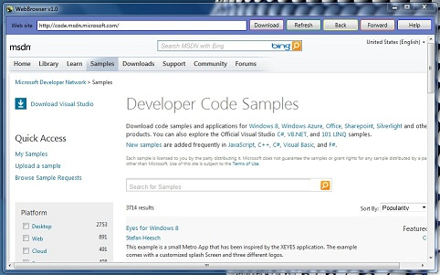

Web Browser is a very simple application that shows the possibility and the easyness to develop a customised browser. In the Visual Studio ToolBox's, you will find a feature called "Web Browser". When using it, you will see how much powerfull it is. By providing options like Go Back, Forward, Refresh,... a lot of work is done for you.Then you just have to add the options you want as adding shortcuts to your favorite sites,show all your preferred sites on starting the application to save some moments. You can think about other ideas like making a customized and simple to use browser to your child.
What you need to run this application on windows:
To run this application, you will need to have Visual Studio installed to build it to generatethe .exe file, so you can run it every time directly without opening Visual Studio.
Description
NB: Please don't forget to write the link beginning with "http://" and then you add your web site.

private void downloadButtonClick(object sender, RoutedEventArgs e)
{
webBrowser1.Navigate(webSiteAdr.Text);
}
private void refreshButtonClick(object sender, RoutedEventArgs e)
{
webBrowser1.Refresh();
}
private void backButtonClick(object sender, RoutedEventArgs e)
{
webBrowser1.GoBack();
}
private void forwardButtonClick(object sender, RoutedEventArgs e)
{
webBrowser1.GoForward();
}
private void helpButtonClick(object sender, RoutedEventArgs e)
{
//open my personal page on msdn.microsoft
webBrowser1.Navigate("http://social.msdn.microsoft.com/profile/houssem%20dellai/");
}
private void downloadButtonClick(object sender, RoutedEventArgs e) { webBrowser1.Navigate(webSiteAdr.Text); } private void refreshButtonClick(object sender, RoutedEventArgs e) { webBrowser1.Refresh(); } private void backButtonClick(object sender, RoutedEventArgs e) { webBrowser1.GoBack(); } private void forwardButtonClick(object sender, RoutedEventArgs e) { webBrowser1.GoForward(); } private void helpButtonClick(object sender, RoutedEventArgs e) { //open my personal page on msdn.microsoft webBrowser1.Navigate("http://social.msdn.microsoft.com/profile/houssem%20dellai/"); }
Feel free to add your magic on this application, and to contact me whenever you want.